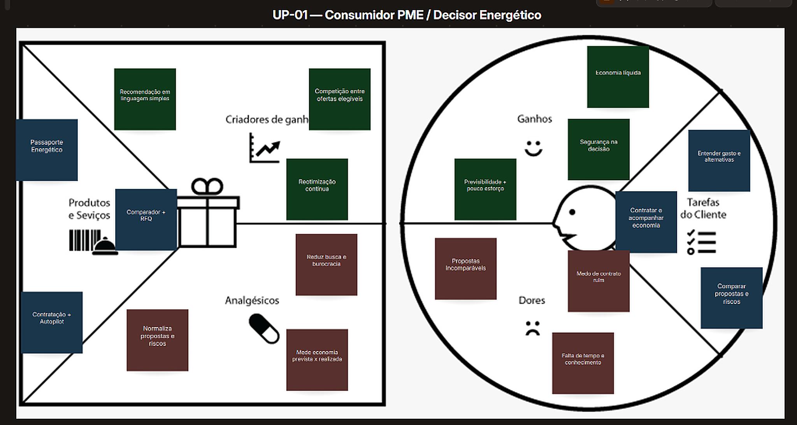

Milet
Plataforma independente para entender, comparar, contratar e gerir energia continuamente.
“Energia em mais liberdade.”
O Propósito da Milet
“Transformar uma decisão energética hoje fragmentada, opaca e passiva em uma jornada digital contínua, transparente e economicamente auditável.”
Equipe Multidisciplinar e Matriz SWOT.
Mapeamento das competências internas da equipe e dos fatores externos do mercado de energia.
Arquitetura de software, dados e integrações.
Engenharia de campo, regulação e setor elétrico.
Modelagem de negócios, gestão e processos.
Desenvolvimento frontend, automação e UX.
Espaço físico, usabilidade e design editorial.
Compliance, contratos e enquadramento regulatório.
Forças da Equipe
- Equipe multidisciplinar cobrindo engenharia, regulação, gestão e direito.
- Capacidade interna de desenvolver protótipos de software e automações.
- Proximidade técnica com a engenharia elétrica e mercado de energia.
Fraquezas da Equipe
- Projeto em estágio inicial, sem histórico prévio de migrações em produção.
- Dependência de parcerias com comercializadoras varejistas reguladas.
- Necessidade de validação empírica de campo para mensurar atrito real.
Oportunidades de Mercado
- Abertura do Mercado Livre para todo o Grupo A desde 2024.
- PMEs buscando ativamente redução de custos fixos sem aporte de capital.
- Digitalização das regras e processos operacionais da CCEE e comercializadoras.
Ameaças de Mercado
- Comercializadoras consolidadas com forças de vendas e corretores locais.
- Possível criação de plataformas centralizadas públicas de comparação (CCEE).
- Alterações frequentes de normas regulatórias, impostos e encargos do setor.
Declaração e Matriz do Problema.
A complexidade técnica e a fragmentação que paralisam a tomada de decisão energética em PMEs.
“Decisores de PMEs têm dificuldade para perceber quando possuem alternativas ao modelo atual de energia e, quando as descobrem, para avaliar sua elegibilidade, comparar propostas em bases equivalentes e acompanhar o resultado da contratação, devido à complexidade técnica e à fragmentação das informações e agentes do setor.”
Quando o Problema Acontece?
- Aumento expressivo ou inesperado da fatura de energia.
- Abordagem comercial ativa de corretores ou comercializadoras.
- Busca institucional por redução de despesas fixas da empresa.
- Renovação de contratos, abertura ou troca de unidade física.
Quem Geralmente é Afetado?
- Decisores de PMEs (proprietários, diretores e CFOs do Grupo A).
- Gestores de facilities sem suporte especializado em energia.
- Empresas com contas acima de R$ 5.000 sem consultor técnico.
- Fornecedores de energia sofrendo com atrito na conversão.
Causa Raiz do Problema
- Baixa conscientização sobre o direito regulatório de escolha.
- Jargões técnicos (tarifa binômia, TUSD, TE, demanda).
- Dispersão de regras entre concessionárias de distribuição.
- Falta de uma régua comparativa neutra e independente.
Como a Pessoa Afetada se Sente?
“Inseguro, sobrecarregado e desconfiado ao tomar uma decisão de alto impacto sem dominar as regras do setor. Teme contratar uma alternativa inadequada, assumir condições desfavoráveis ou descobrir posteriormente que a economia prometida não se concretizou.”
Quais Alternativas São Usadas?
- Inércia: permanecer na distribuidora cativa pagando tarifas cheias.
- Pedir propostas avulsas a diferentes comercializadoras por e-mail.
- Tentar consolidar orçamentos manualmente em planilhas internas.
- Contratar consultorias tradicionais (custo elevado para PMEs).
Desvantagens das Alternativas
- Contato fragmentado com múltiplos agentes e formatos distintos.
- Premissas tributárias díspares que impedem comparação direta.
- Consolidação manual demorada e propensa a erros de cálculo.
- Ausência de acompanhamento contínuo entre decisão e resultado mensal.
Mapa da Empatia — Consumidor PME / Decisor Energético.
Investigação profunda das percepções, barreiras e estímulos do decisor empresarial de energia.
O que Pensa e Sente?
- “Minha conta está alta, mas não sei se existe alternativa melhor.”
- Receio de tomar uma decisão técnica errada e ser penalizado.
- Deseja economia real sem assumir nova complexidade operacional.
- Desconfia de promessas comerciais excessivamente agressivas.
O que Vê?
- Conta de energia complexa com siglas e tarifas de difícil leitura.
- Comercializadoras e consultores oferecendo opções divergentes.
- Propostas com estruturas, prazos e indexadores incompatíveis.
- Notícias sobre Mercado Livre de Energia e Geração Distribuída.
O que Ouve?
- Promessas de economia expressiva sem investimento inicial.
- Recomendações e relatos de empresários, contadores e parceiros.
- Abordagens comerciais insistentes de corretores e representantes.
- Informações divergentes sobre contratos, multas e riscos de corte.
O que Fala e Faz?
- Encaminha a fatura de energia em PDF para análise de terceiros.
- Solicita algumas propostas no mercado para tentar comparar.
- Consulta contadores e amigos empresários de confiança.
- Pode adiar ou travar a decisão quando fica inseguro com as regras.
Canvas da Proposta de Valor — Consumidor PME.
Alinhamento entre o Perfil do Cliente (Tarefas, Dores e Ganhos) e o Mapa de Valor Milet (Produtos, Aliviadores e Criadores).

Mapa da Empatia — Comercializadora / Fornecedor.
Compreensão das pressões comerciais e operacionais dos agentes de comercialização de energia.
O que Pensa e Sente?
- Quer acessar demanda qualificada e empresas com intenção real de compra.
- Frustra-se com leads desqualificados e faturas com dados faltantes.
- Busca eficiência comercial para viabilizar contratos de menor ticket.
- Precisa proteger sua margem e otimizar o tempo da equipe de pricing.
O que Vê?
- Alta competição no varejo após a abertura do Grupo A em 2024.
- Canais de prospecção com custo elevado (corretores, tráfego, eventos).
- Clientes PME pouco familiarizados com os conceitos do mercado livre.
- Faturas enviadas em formatos distintos, fotos borradas e dados parciais.
O que Ouve?
- “Só quero saber quanto vou economizar no final do mês.”
- “Vou analisar a proposta internamente e retorno depois.”
- “Recebi uma proposta com desconto maior de outra comercializadora.”
- Dúvidas recorrentes sobre risco de corte de energia e fidelidade.
O que Fala e Faz?
- Realiza prospecção ativa de PMEs por telefone, e-mail e parcerias.
- Solicita faturas dos últimos 12 meses para estudo de viabilidade.
- Analisa histórico de consumo, ponta/fora ponta e demanda contratada.
- Elabora propostas comerciais customizadas e minutas contratuais.
Canvas da Proposta de Valor — Fornecedor de Energia.
Arquitetura de eficiência comercial e padronização para comercializadoras e geradores no mercado livre.
- Portal Padronizado de Propostas: Inserção ágil de parâmetros comerciais.
- Matching Inteligente de Demanda: Encaminhamento de RFQs aderentes ao portfólio.
- Passaporte Energético Estruturado: Histórico técnico sanitizado pronto para pricing.
- Pipeline & Rastreabilidade: Visibilidade do status de decisão em tempo real.
- Eliminação da triagem e digitação manual de faturas ilegíveis ou incompletas.
- Redução do retrabalho operacional na coleta de dados técnicos do consumidor.
- Canal direto com decisores com intenção ativa de contratação.
- Menor taxa de abandono do cliente decorrente de dúvidas regulatórias.
- Redução do tempo de resposta e precificação de cotações para minutos.
- Maior taxa de conversão em virtude da pré-qualificação técnica da demanda.
- Escalar o volume de contratos de PMEs sem inflar o custo comercial interno.
- Canal estruturado para expansão de carteira em novas regiões e distribuidoras.
- Prospectar empresas elegíveis no Grupo A com perfil de crédito adequado.
- Receber, tratar e validar histórico de faturas dos últimos 12 meses.
- Calcular curva de carga, modelar preços e formular propostas comerciais.
- Negociar contratos, formalizar migrações na CCEE e gerir carteira.
- Custo de aquisição elevado na prospecção de pequenas e médias empresas.
- Tempo excessivo da equipe técnica tratando faturas incompletas ou ilegíveis.
- Ciclo de negociação prolongado com alto índice de desistência do cliente.
- Dificuldade de escala comercial sem depender de intermediários locais.
- Receber RFQs estruturados com todos os dados técnicos consolidados.
- Otimizar o tempo e custo operacional da equipe de vendas e precificação.
- Atingir previsibilidade no funil de vendas e maior agilidade no fechamento.
- Crescimento sustentável de receita e volume de energia comercializada.
Validação do Problema — Consumidor PME.
Instrumento de pesquisa estruturado (Formulário Forms) para validação das hipóteses de dor em decisores.
Quando foi a última vez que você tentou entender ou reduzir o gasto de energia da sua empresa? O que motivou essa iniciativa?
Você já recebeu ou buscou alguma proposta de Mercado Livre, Geração Distribuída ou outra alternativa? Como você tentou comparar as opções?
Qual parte do processo gerou mais dúvida, insegurança ou retrabalho para você e sua equipe?
Como você verifica se uma proposta comercial realmente gera economia líquida e possui condições contratuais adequadas?
Após assinar um contrato, como você acompanha se a economia prometida realmente ocorreu nas contas dos meses seguintes?
Espaço reservado para inserção da transcrição do respondente durante a consolidação de campo.
Espaço reservado para inserção da transcrição do respondente durante a consolidação de campo.
Validação do Problema — Comercializadora / Fornecedor.
Instrumento de entrevista com agentes de oferta para mensurar atrito comercial, dados e gargalos de conversão.
Como vocês encontram e qualificam pequenas e médias empresas interessadas em contratar energia atualmente?
Quais informações normalmente faltam ou chegam despadronizadas quando o cliente solicita uma proposta comercial?
Em quais etapas do processo de cotação existe mais retrabalho, lentidão ou perda de tempo da equipe de vendas?
Quais são os principais motivos que fazem uma cotação elaborada não avançar para o fechamento contratual?
Que conjunto de informações torna uma oportunidade de PME imediatamente pronta para receber uma proposta assertiva?
Espaço reservado para inserção da transcrição do especialista comercial durante as entrevistas de mercado.
Espaço reservado para inserção da transcrição do especialista comercial durante as entrevistas de mercado.
Síntese da Entrega N1 e Próximos Passos.
Consolidação do diagnóstico de oportunidade e planejamento da validação em campo para a Etapa N2.
Diagnóstico & Modelagem
- ✓ Equipe multidisciplinar mapeada com Matriz SWOT interna e externa.
- ✓ Declaração do problema lapidada em frase única e Matriz em 6 blocos.
- ✓ Mapas de Empatia desenvolvidos para Demanda (PME) e Oferta.
- ✓ Canvas da Proposta de Valor estruturado bilateralmente.
- ✓ Instrumentos de validação de campo (Forms e Roteiros) formulados.
Validação de Campo
- ▸ Tabulação das respostas do formulário com decisores de PMEs.
- ▸ Condução de entrevistas em profundidade com comercializadoras.
- ▸ Identificação de padrões espontâneos de dor e objeções contratuais.
- ▸ Confronto das respostas com as hipóteses iniciais dos Mapas de Empatia.
- ▸ Refinamento do Value Proposition Canvas com dados empíricos reais.
Plano de Negócios & MVP
- ▸ Elaboração do Plano de Negócios simplificado (Marketing & Operações).
- ▸ Teste do protótipo digital do Passaporte Energético com PMEs.
- ▸ Validação da esteira de RFQ padronizado com agentes de oferta.
- ▸ Projeção financeira preliminar e análise de riscos setoriais.
- ▸ Preparação do Pitch Final de Negócios da disciplina.
Business Model Canvas — Hipóteses em Validação.
Mapeamento dos 9 blocos do modelo de negócios da Milet para o ecossistema bilateral de energia.

Milet — Mesma energia. Mais possibilidades.
Plataforma digital para decisão, comparação e gestão contínua de energia
Eduardo Ferreira de Mattos · Enzo Engrich Larese · Heloísa Carvalho Confessor
Leonardo Dourado · Maria Luíza Sampaio Nogueira · Mell Castro Pereira Junqueira Ferreira
Projetos Empreendedores (2026.2) · Universidade Presbiteriana Mackenzie
Docente: Profa. Julia Gebara
Muito obrigado. Ficamos à disposição da banca.